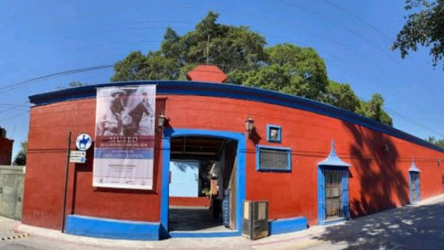

📸 Galería de Imágenes

🏛️ Historia y Reseña Completa
El Ex Cuartel de Emiliano Zapata —oficialmente el Museo de la Revolución del Sur— se sitúa en una edificación de mediados del siglo XIX que originalmente fungió como un molino de arroz. Entre 1914 and 1918, el General Emiliano Zapata estableció aquí su cuartel general definitivo y residencia, convirtiendo al poblado de Tlaltizapán en el corazón y la capital operativa del movimiento zapatista. Desde este recinto se promulgaron importantes leyes agrarias, se administraba la justicia, funcionaban oficinas gubernamentales de educación y hacienda, e incluso se llegó a acuñar moneda propia.
Durante la época virreinal fungió también como cárcel y almacén. Hoy en día alberga el Museo Regional de los Pueblos de Morelos, un espacio dedicado a la divulgación arqueológica, etnográfica e histórica de la entidad. El principal tesoro cultural del inmueble radica en la terraza exterior del segundo nivel, donde el célebre muralista mexicano Diego Rivera plasmó de forma magistral las crónicas de la Conquista y la Revolución Mexicana.